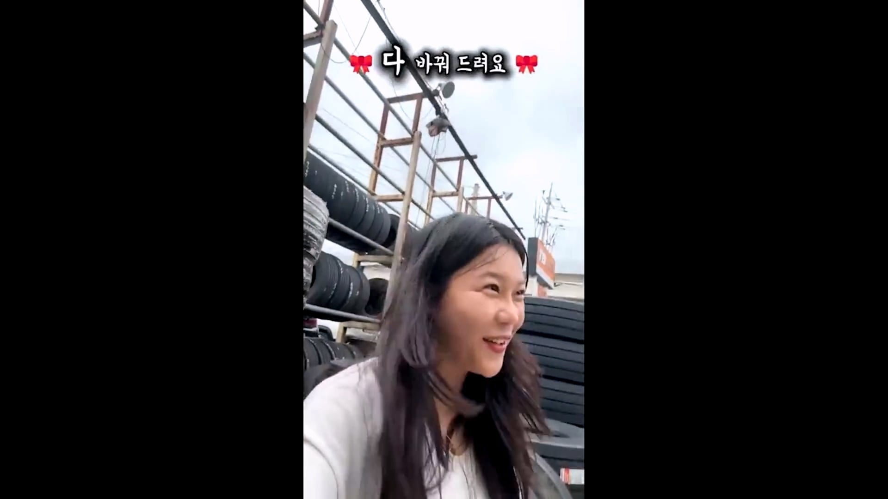
1달전 사연 받았고
한국 타이어와 교체 이벤트 하기로 했다
한국타이어 앰버서더라서
4개의 무상 타이어 교체 있다
4개는 구독자들에게
나머지는 한국타이어 지원 예정
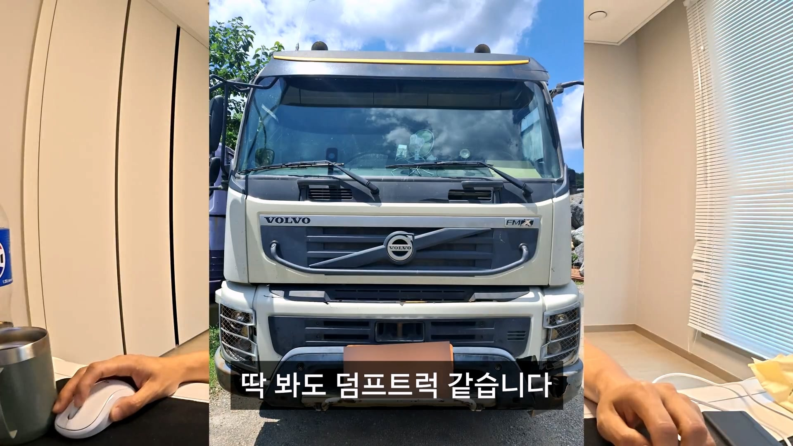
차주는 아니고 아내가
사연 보내준거같다
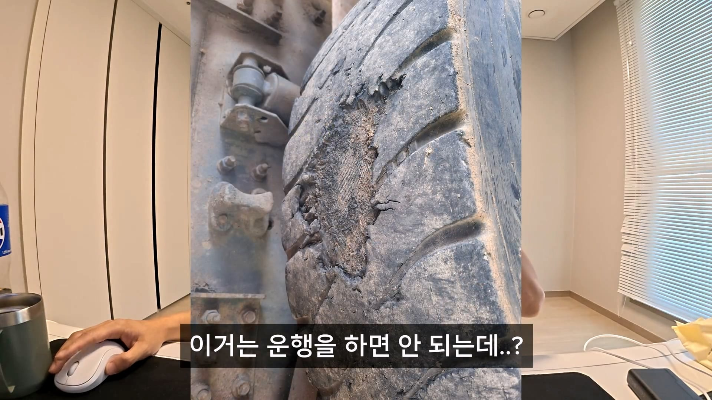
청킹현상인데 이 정도면 운행하면 안된다
바로 바꿔야되는 수준이다
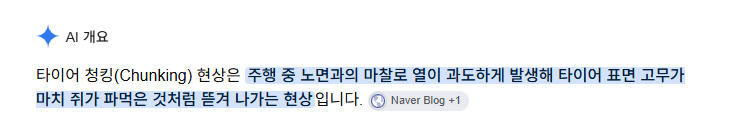
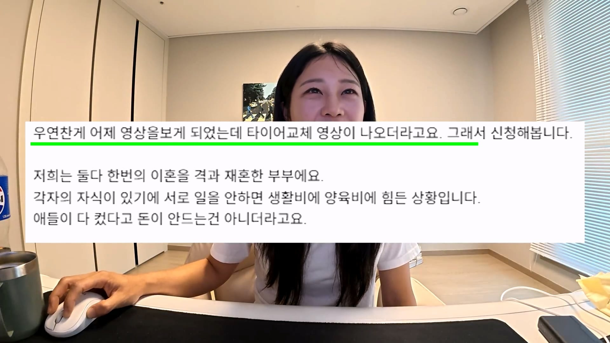
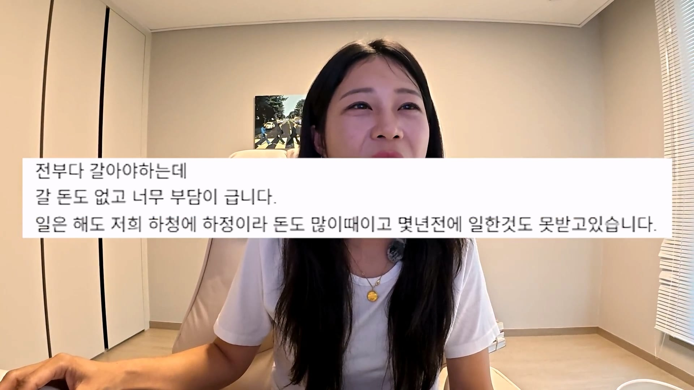
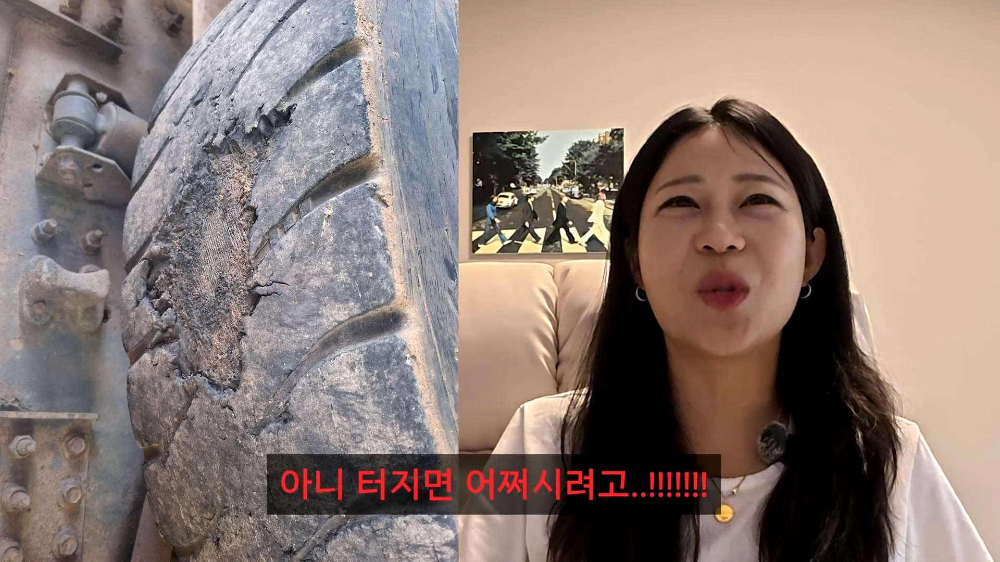
당장 터질지도 모른다
소름 돋는다
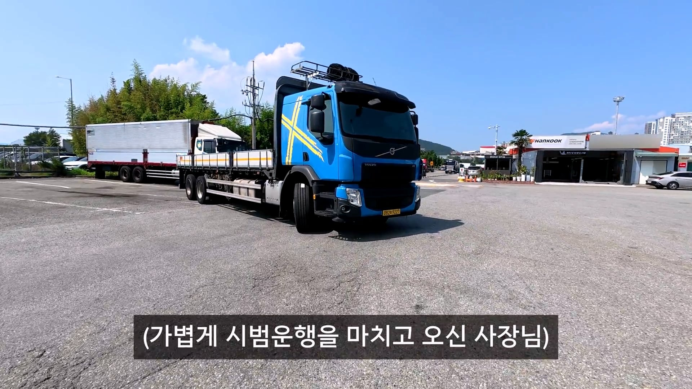
사연 받고 무료로 교체 완료
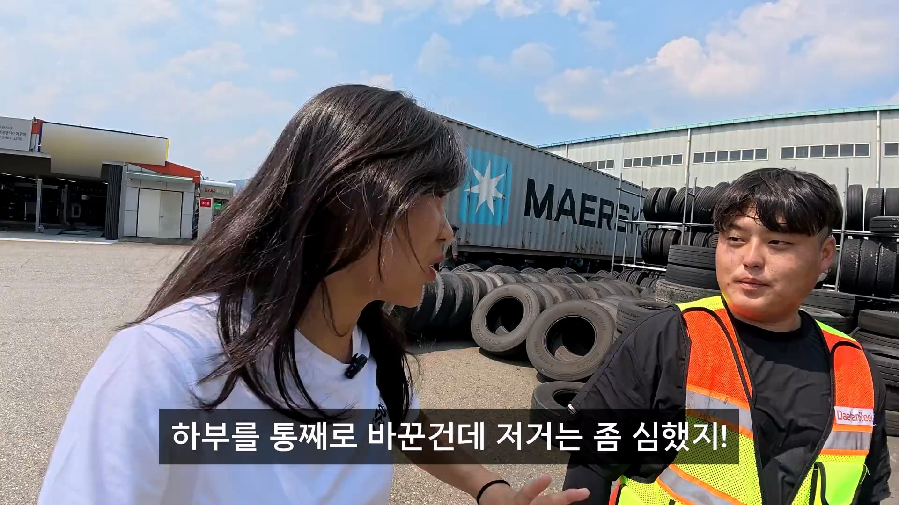
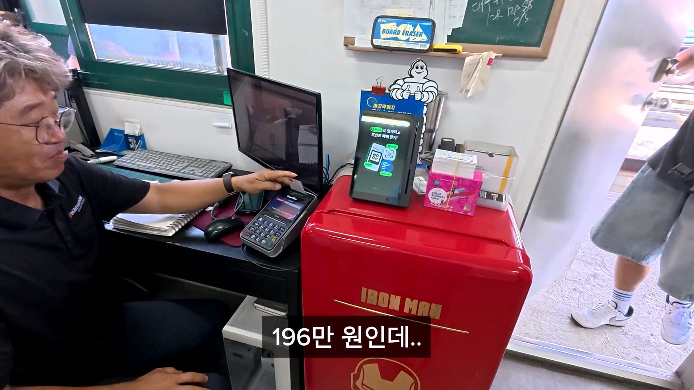
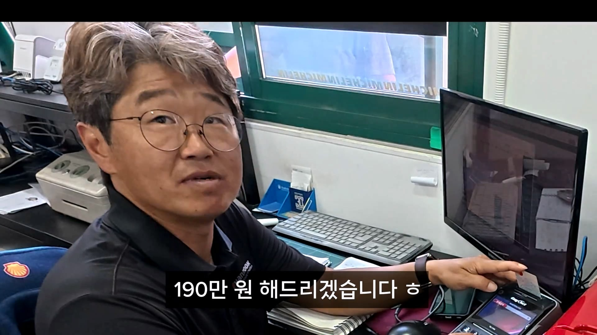
사비로 1분 더 해드렸다
디질거면 혼자 곱게 죽어라